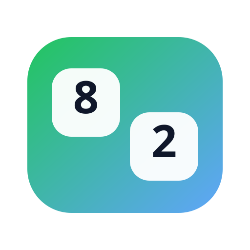
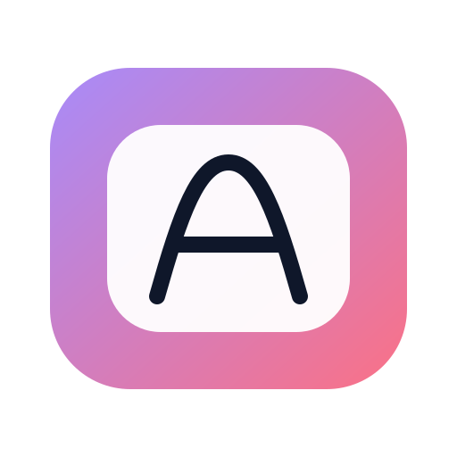

🦊 Vosje
Start-knop (belangrijk)
Op iPad/iPhone mag spraak pas na een klik. Druk 1x op Start.
![vosje](data:image/svg+xml;utf8,%3Csvg%20xmlns%3D%22http%3A//www.w3.org/2000/svg%22%20viewBox%3D%220%200%20512%20512%22%3E%0A%3Cdefs%3E%3ClinearGradient%20id%3D%22g1%22%20x1%3D%220%22%20y1%3D%220%22%20x2%3D%221%22%20y2%3D%221%22%3E%3Cstop%20offset%3D%220%22%20stop-color%3D%22%23ff7a59%22/%3E%3Cstop%20offset%3D%221%22%20stop-color%3D%22%23ffb74a%22/%3E%3C/linearGradient%3E%3C/defs%3E%0A%3Cpath%20d%3D%22M96%20236c0-80%2064-140%20160-140s160%2060%20160%20140c0%20126-84%20196-160%20196S96%20362%2096%20236z%22%20fill%3D%22url%28%23g1%29%22/%3E%0A%3Cpath%20d%3D%22M170%20170%20118%2092c-10-15%206-33%2023-26l92%2037%22%20fill%3D%22%23ff6a3d%22/%3E%0A%3Cpath%20d%3D%22M342%20170%20394%2092c10-15-6-33-23-26l-92%2037%22%20fill%3D%22%23ff6a3d%22/%3E%0A%3Cpath%20d%3D%22M152%20272c16%2058%2060%2096%20104%2096s88-38%20104-96c-36-20-72-30-104-30s-68%2010-104%2030z%22%20fill%3D%22%23fff7ed%22/%3E%0A%3Ccircle%20cx%3D%22200%22%20cy%3D%22240%22%20r%3D%2218%22%20fill%3D%22%231f2937%22/%3E%3Ccircle%20cx%3D%22312%22%20cy%3D%22240%22%20r%3D%2218%22%20fill%3D%22%231f2937%22/%3E%0A%3Cpath%20d%3D%22M256%20260c12%200%2022%208%2022%2018s-10%2018-22%2018-22-8-22-18%2010-18%2022-18z%22%20fill%3D%22%231f2937%22/%3E%0A%3Cpath%20d%3D%22M220%20308c10%2014%2022%2022%2036%2022s26-8%2036-22%22%20fill%3D%22none%22%20stroke%3D%22%231f2937%22%20stroke-width%3D%2214%22%20stroke-linecap%3D%22round%22/%3E%0A%3C/svg%3E)

🔤 Letters
Level 3: klanken (optioneel). Level 4: optellen (optioneel).
Op iPad/iPhone mag spraak pas na een klik. Druk 1x op Start.